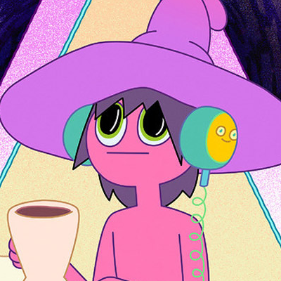

uma série que te fará refletir sobre muitas coisas
"Midnight Gospel" é uma série animada criada por Pendleton Ward e Duncan Trussell, lançada na Netflix em 2020. A série segue Clancy, um podcaster interdimensional, enquanto ele viaja através de diferentes mundos simulados entrevistando habitantes locais para seu programa.
A série é única por sua abordagem surreal e filosófica, combinando diálogos profundos sobre temas como vida, morte, espiritualidade, drogas, e existência com uma estética visual vibrante e muitas vezes psicodélica.
Ao assistir "Midnight Gospel", os espectadores são confrontados com uma variedade de questões profundas e existenciais. Aqui estão algumas reflexões que a série pode nos inspirar:
- A natureza da realidade: A série explora a ideia de realidades alternativas e universos simulados, levantando questões sobre o que é real e o que é apenas uma construção.
- Morte e mortalidade: Muitos episódios abordam temas de morte e mortalidade de uma forma sincera e introspectiva, nos fazendo refletir sobre o significado da vida e como lidamos com o fim inevitável.
- Consciência e espiritualidade: "Midnight Gospel" mergulha em discussões sobre consciência, espiritualidade e práticas de meditação, explorando diferentes perspectivas e filosofias sobre o eu interior e a conexão com o universo.
- Ética e moralidade: Várias conversas na série abordam questões éticas e morais complexas, desafiando os espectadores a considerar diferentes pontos de vista e avaliar suas próprias crenças e valores.
- Aceitação e transformação: A jornada de Clancy e suas interações com os habitantes dos mundos simulados muitas vezes giram em torno de temas de aceitação, perdão e crescimento pessoal, nos lembrando da importância de aprender com nossas experiências e nos tornarmos melhores versões de nós mesmos.